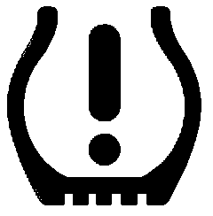
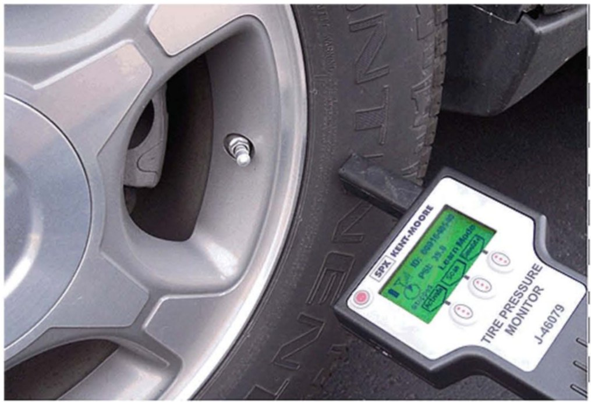

Tire Monitor System - Various Concerns
Bulletin No.: 07-03-16-002ADate: November 13, 2007
INFORMATION
Subject:
Tire Pressure Monitor System Concerns
Models:
2007 Buick Lucerne, Rainier
2006-2007 Cadillac DTS, Escalade Models
2007 Cadillac SRX
2006-2007 Chevrolet Avalanche, Impala, Monte Carlo, Suburban, Tahoe
2007 Chevrolet Equinox, Silverado, TrailBlazer
2006-2007 GMC Yukon Models
2007 GMC Acadia, Envoy, Sierra
2007 Pontiac Torrent
2007 Saturn OUTLOOK
2007-2008 Saab 9-7X
2008 Passenger Cars and Trucks (including Saturn)
2008 HUMMER H2, H3
Supercede:
This bulletin is being revised to add models. Please discard Corporate Bulletin Number 07-03-16-002 (Section 03 - Suspension).
When a customer comments on a condition related to tire pressure monitoring, it is very important to distinguish between Check Tire Pressure conditions and Service Tire Monitor system issues. Understanding the difference between the two distinct conditions will help you distinguish between normal system operation (tire needs air) and a system malfunction.
There are two important differences between a Check Tire Pressure message/light and a Service Tire Monitor message light:
A Check Tire Pressure message/light will stay on solid and no system codes set. The TPM system is operating as designed. Correcting the tire pressure will resolve the issue.
A Service Tire Monitor message/light will blink and system codes WILL set. There is a condition that should be diagnosed and corrected.

Tire Pressure Light
Service Tire Monitor (light blinks, then stays on)
The Tire Pressure Light will blink and a Service Tire Monitor message will be displayed when a system malfunction occurs. If one or more tire pressure sensors does not transmit information for 18 minutes of driving, the TPM system WILL set a code, display a message, and BLINK the light for about a minute, after which the light will stay on solid for the remainder of the ignition cycle. If the system fault is intermittent, the message/light may also be intermittent - on during some ignition cycles, off during others.
If the TPM system detects a tire pressure below the threshold, the Check Tire Pressure message and the Tire Pressure Light will come on and stay on. The message and light may be intermittent in nature, especially during cold weather.
The tire may have picked up a road hazard and/or have a slow leak. The tire pressure may not have been checked in the past six months.
The air pressure in a cold tire may be at the pressure where the system is required to warn the driver. However, that same tire will rise in temperature and pressure as the customer drives, causing the message and light to go out.
The tires may have been rotated, pressures adjusted, and the new tire positions were NOT re-learned into the vehicle. This can occur on vehicles that have two different placard pressures for front and rear tires.
The TPM system is required by law to warn the driver if the tire pressure is below 25% of the tire pressure displayed on the tire placard. As a rule of thumb, tire pressure will decrease about 7 kPa (1 psi) for every 6°C (10°F) decrease in temperature.
Tire pressure should be set to the specified placard pressure at the lowest seasonal temperature the vehicle will encounter during operation.
The correct action to avoid a Check Tire Pressure message due to extreme temperature changes is to do the following:
Use an accurate, high quality tire pressure gauge.
Re-learn the TPM sensors and adjust the tire pressure to the placard values after every tire rotation.
Let the vehicle sit and adjust the tire pressure to the specified value when the tire temperature is at the lowest expected temperature.
Never set the tire pressure below the placard value regardless of tire temperature or ambient temperature.
On extremely cold days, if setting the tire pressure when the vehicle has been indoors, it may be necessary to compensate for the low outside temperature by adding 21-27 kPa (3-4 psi) more than the placard pressure. At some later time, when convenient and when the tires are cold (outdoors), the pressure should be re-checked and adjusted
to the placard pressures if necessary.
As a rule of thumb, tire pressure will decrease about 7 kPa (1 psi) for every 6°C (10°F) decrease in temperature.
Tip
It is important that the receiver has learned the correct locations of each tire pressure sensor so that the system indicates the correct location of the tire pressure condition, as well as sensor location for diagnostic procedures. The sensor learn procedure must be performed after every tire rotation, sensor replacement, or receiver replacement. Failure to do so may result in misdiagnosis.
TPM Tool J 46079 Software Updates and Hardware Update Kit
The J 46079 TPM tool is a valuable aid in diagnosing system faults with TPM systems. It is a software-driven tool that REQUIRES periodic updates in order to work on new model cars and trucks. Failure to update the tool with the latest software version will result in possible misdiagnosis.
TPM Software Version 3.5 has recently been shipped to each GM dealership in the J 46079 TPM update kit. All future TPM software updates will be posted in GM DealerWorld as needed. Under the Service tab, access "GM Essential Tools - S/W Updates" and select the appropriate tool software for download.
This update consists of two parts:
A hardware update kit which consists of a custom rechargeable battery pack, battery cover with charging terminals, and a charging cradle with a smart charger where the whole tool will fit into the cradle for charging (same concept as a cordless phone). This hardware update substantially increases the life of the batteries and will assure that the TPM Tester always has full battery capacity.
The software update will add new vehicles and also improve the speed of the tool's read-back ability and accuracy. Sensor transmission signal strength is displayed in the upper left corner of the main display next to the tool's battery level display. When the tool is used in both activate or scan mode, it will receive the sensor's transmission and indicate its signal strength. It is important to note the sensor's transmission signal strength since it is a good indication of an accurate diagnostic.
Tool User Tip

The placement of the TPM Tester's antenna when activating a sensor is critical, especially with the latest software upate. When activating a sensor, the antenna tip of the TPM Test J 46079 must be placed on the sidewall, perpendicular to the tire, and close to the valve stem (see photo above). This will assure proper activation of the sensor. If the antenna of the TPM Tester is placed either on the valve stem or on the wheel itself, the tool may not properly activate the sensor, causing improper diagnosis.
One of the steps in the TPM diagnosis is to use the J 46079 and the Tech 2(R) to verify that the sensor IDs are programmed into the vehicle in their correct locations.
Diagnostic Tip
If you encounter a sensor that does not respond when activated by the tool, try activating another sensor that responded previously. This will help you determine it the tool is able to activate the sensor or it you have a problem with one particular sensor.
A sensor that does not transmit information for 18 minutes of driving will set a TPM system DTC.

Disclaimer